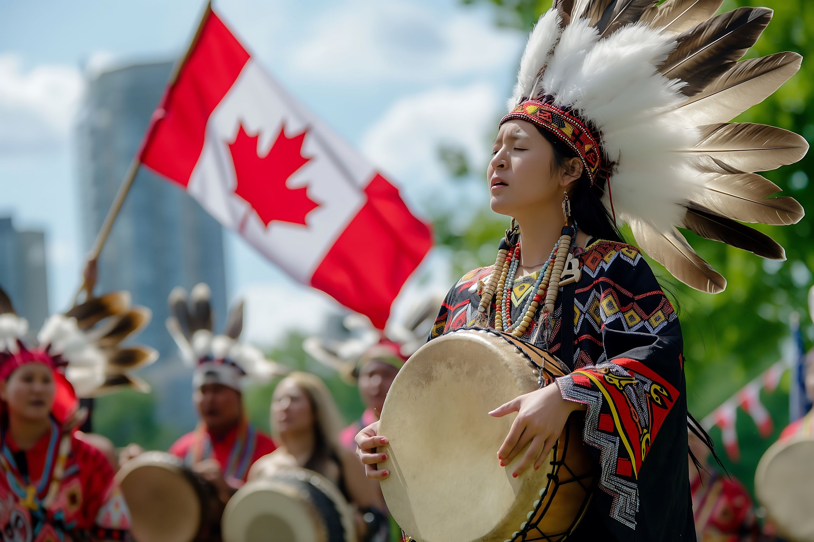

Cultura do Canadá
O Canadá possui uma rica mistura de tradições indígenas, francesas, britânicas e de imigrantes do mundo inteiro.
Influências Históricas
A cultura canadense é marcada pela união de povos nativos, colonizadores europeus e diversos grupos imigrantes que chegaram ao longo dos séculos.

Arte e Música
O país possui uma cena artística vibrante, incluindo música, pintura, cinema e tradições indígenas preservadas e valorizadas.

Idiomas Oficiais
O Canadá tem dois idiomas oficiais: inglês e francês. A província de Quebec é fortemente marcada pela cultura francófona.

Tradições Indígenas
Os povos originários do Canadá mantêm uma herança cultural extremamente rica, com narrativas, danças, artesanato e rituais importantes para a identidade nacional.
